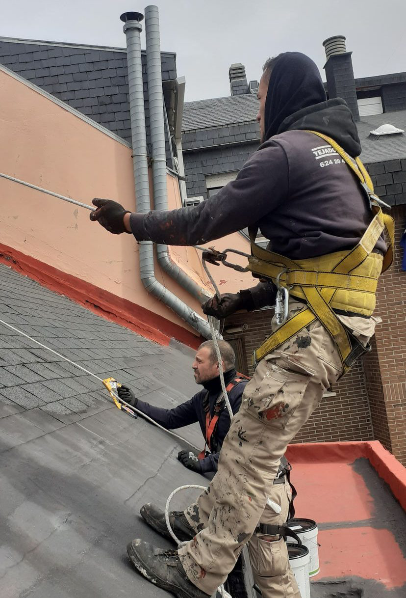
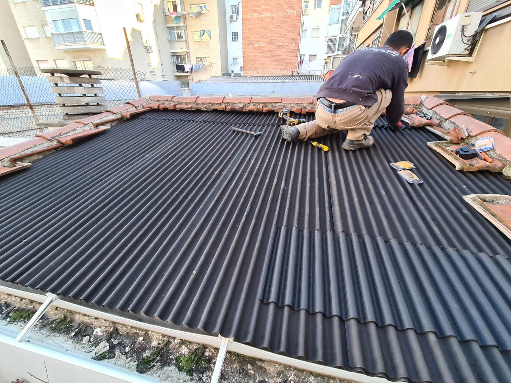
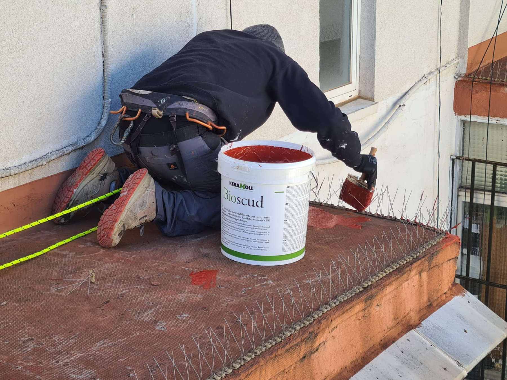

Reparamos goteras en tejados y cubiertas a precio razonable en
todo
Madrid(Arganzuela, Chamberí, Atocha, Alcalá de Henares,
Getafe, Las Rozas..) Póngase en contacto con nosotros a través
nuestra hoja de contacto para clientes
o llámenos directamente en horario laboral.




